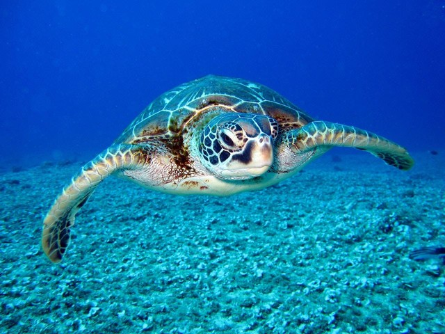

Penyu

Penyu adalah hewan yang banyak ditemukan bertelur di beberapa pesisir pantai di Indonesia sejak dahulu. Penyu memiliki cangkang keras yang melindungi tubuhnya dan dapat hidup di laut maupun darat. Penyu juga dikenal sebagai hewan yang memiliki umur panjang dan dapat hidup hingga ratusan tahun. Penyu memiliki beberapa spesies, di antaranya adalah penyu hijau, penyu sisik, dan penyu belimbing. Penyu hijau adalah spesies penyu yang paling umum ditemukan di perairan tropis dan subtropis, dan dikenal sebagai penyu yang paling banyak dikonsumsi oleh manusia. Penyu sisik memiliki cangkang